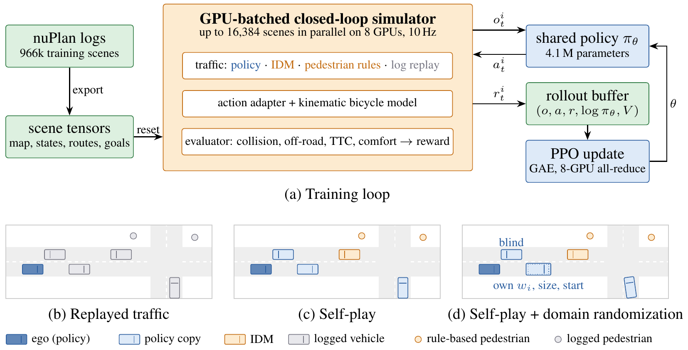
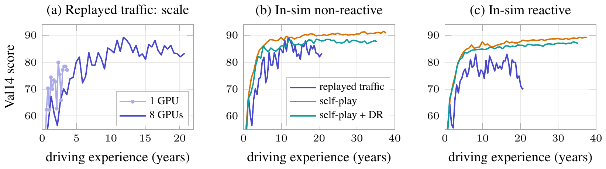
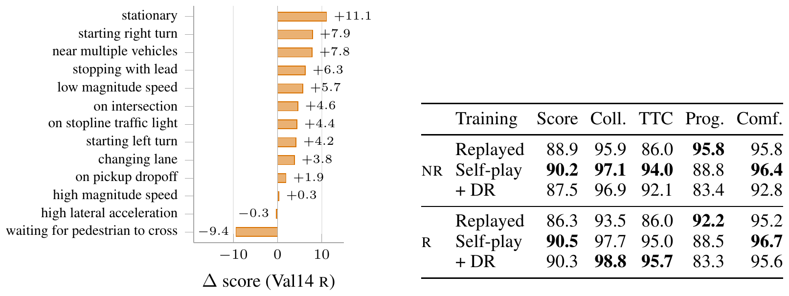
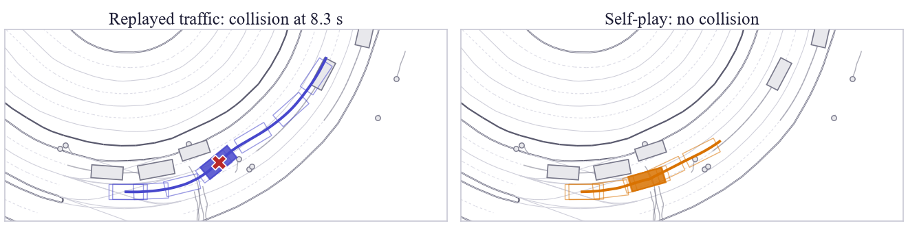
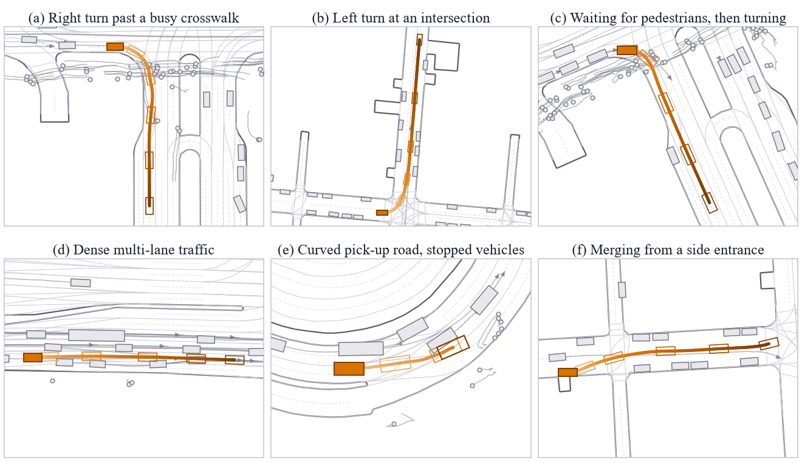
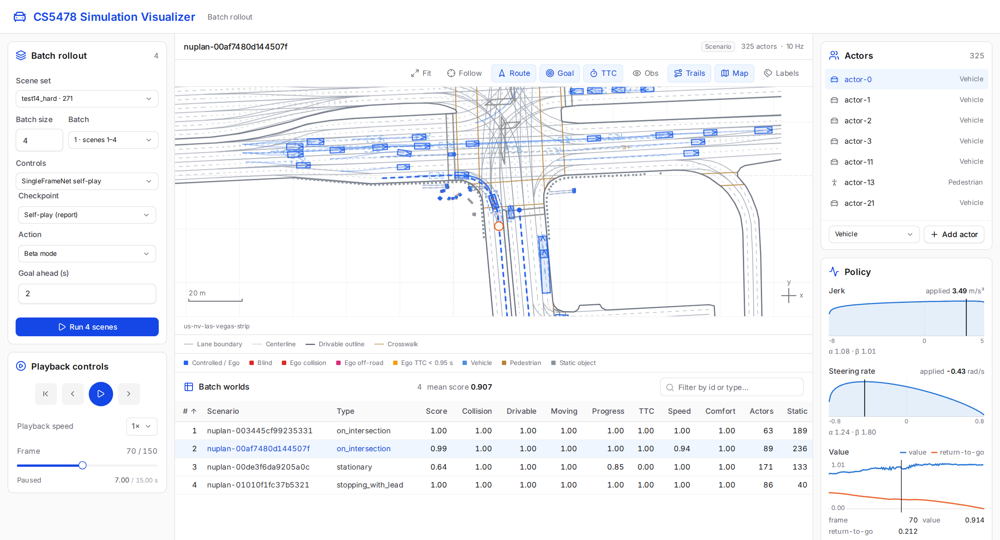

CS5478 Intelligent Robots: Algorithms and Systems · Final Project
Self-Play Reinforcement Learning for Closed-Loop Motion Planning without Human Trajectories
National University of Singapore
Abstract
Learning-based motion planners are mostly trained to imitate logged human trajectories, which never show how other drivers respond to the planner's own decisions; on nuPlan Val14, imitation planners lose up to 10.8 points when traffic reacts. We ask whether reinforcement learning, given sufficient compute, can replace demonstrations altogether. We build a GPU-batched closed-loop simulator on nuPlan scenarios that runs thousands of scenes in parallel, and train a 4.1 M-parameter policy from scratch with PPO, first against replayed traffic and then with self-play, where one shared policy drives the ego and up to ten vehicles around it. With the official nuPlan devkit, the policy trained against replayed traffic averages 84.83 over Val14, Test14-hard and Test14-random, above every imitation planner. Self-play raises the average to 87.40, closes the gap between non-reactive and reactive traffic on Val14, and keeps improving over 37 years of simulated driving. In reactive traffic, domain randomization halves at-fault collisions without changing the score, showing that the nuPlan score, which measures progress against the human driver, is an incomplete proxy for safe driving.
Method
No demonstrations, no pre-training: the policy learns only from the consequences of its own actions in closed loop.
We export 966k fifteen-second nuPlan scenes into fixed-shape tensors. Our simulator advances up to 16,384 of them in parallel on 8 GPUs at 10 Hz. In one scene it mixes policy-controlled vehicles, IDM vehicles, rule-based pedestrians and log-replayed agents. An evaluator scores every step with nuPlan's closed-loop metrics, and the reward comes from these metrics. PPO trains one policy in three settings:
- Replayed traffic. The ego is the only learner, and the other agents follow their logs.
- Self-play. The policy also drives up to ten nearby vehicles. The other vehicles follow IDM and pedestrians follow rules, so no vehicle replays its log.
- Self-play + domain randomization. Every agent also gets its own reward weights, 10% of the agents are blind, and sizes and initial states are perturbed.

The policy is a single-frame network with 4.1 M parameters, shared by every controlled vehicle. Each vehicle observes, in its own rear-axle frame:
- up to 96 agents;
- 256 map polyline chunks;
- a goal on its route 2 s ahead;
- its own state.
The network outputs two Beta distributions, over jerk and steering rate. A kinematic bicycle model integrates them.

Results
All scores come from the official nuPlan devkit: its own simulation loop, controller and metrics. NR is non-reactive traffic, R is reactive traffic, and every score is ×100.
Trained against replayed traffic, the policy already averages above every imitation planner. Self-play adds 2.6 points on average, and with it the policy no longer loses points on Val14 when traffic reacts: it gains 0.3, while Diffusion Planner loses 7.1.
| Val14 | Test14-hard | Test14-random | |||||
|---|---|---|---|---|---|---|---|
| Planner | NR | R | NR | R | NR | R | Avg. |
| Human | |||||||
| Human driver (log replay) | 93.53 | 80.32 | 85.96 | 68.80 | 94.03 | 75.86 | 83.08 |
| Rule-based and hybrid † | |||||||
| IDM | 75.60 | 77.33 | 56.15 | 62.26 | 70.39 | 74.42 | 69.36 |
| PDM-Closed | 92.84 | 92.12 | 65.08 | 75.19 | 90.05 | 91.63 | 84.48 |
| PDM-Hybrid | 92.77 | 92.11 | 65.99 | 76.07 | 90.10 | 91.28 | 84.72 |
| Diffusion Planner w/ refine | 94.26 | 92.90 | 78.87 | 82.00 | 94.80 | 91.75 | 89.10 |
| Plan-R1 w/ refine | 94.72 | 93.54 | 78.46 | 81.70 | 94.64 | 93.71 | 89.46 |
| Imitation learning | |||||||
| UrbanDriver | 68.57 | 64.11 | 50.40 | 49.95 | 51.83 | 67.15 | 58.67 |
| PlanTF | 84.27 | 76.95 | 69.70 | 61.61 | 85.62 | 79.58 | 76.29 |
| PLUTO | 88.89 | 78.11 | 70.03 | 59.74 | 89.90 | 78.62 | 77.55 |
| Diffusion Planner | 89.87 | 82.80 | 75.99 | 69.22 | 89.19 | 82.93 | 81.67 |
| Flow Planner | 90.43 | 83.31 | 76.47 | 70.42 | 89.88 | 82.93 | 82.24 |
| Pi-DiMT | 89.66 | 82.95 | 77.08 | 71.02 | 92.45 | 87.09 | 83.38 |
| Imitation + RL fine-tuning | |||||||
| Plan-R1 | 88.98 | 87.69 | 77.45 | 77.20 | 91.23 | 90.04 | 85.43 |
| PlannerRFT | 89.96 | 84.46 | 77.16 | 72.21 | 90.76 | 85.80 | 83.39 |
| RL from scratch (ours) | |||||||
| Replayed traffic | 88.93 | 86.32 | 77.35 | 79.42 | 88.19 | 88.78 | 84.83 |
| Self-play | 90.17 | 90.47 | 78.88 | 81.99 | 91.99 | 90.88 | 87.40 |
| Self-play + DR | 87.48 | 90.32 | 78.21 | 81.76 | 88.74 | 90.79 | 86.22 |
Experience, not update size, is what scales
The same network trained on one GPU stays well below the 8-GPU run: what separates them is the years of driving each run collects. Self-play also trains more smoothly. Its curve rises steadily over 37 years of experience, while the run against replayed traffic degrades late in training.

Where self-play gains, and what the score misses
Self-play is safer in interactions. In reactive traffic its no-at-fault-collision score is 97.7 against 93.5, and its TTC score is 95.0 against 86.0. It pays with a little progress. The gain is largest where cars interact; the one clear loss is waiting for pedestrians to cross, likely because training uses simple rule-based pedestrians.
Domain randomization halves at-fault collisions in reactive traffic but leaves the score unchanged. nuPlan measures progress against the human driver, so more cautious driving loses progress. Collision and TTC rates deserve to be reported next to the score.

Cases
Self-play in complex scenes
These are Test14-hard scenarios in non-reactive traffic. The self-play policy drives the ego (orange); the grey agents and pedestrians replay their logs.
00af74800a1adb702b34e2a151b4035462db9dc1e10289f3Following a braking lead vehicle
Here both policies drive the same Val14 scene, 7426524f, and the other cars replay the log. The lead vehicle brakes. The policy trained against replayed traffic keeps its speed and rear-ends it after 8.6 s. The self-play policy slows down early and keeps a safe gap. In the clips, the replay-trained ego turns yellow when its time to collision drops below 0.95 s and red when it collides.
Reactive traffic
These are closed-loop rollouts on Val14 in reactive traffic (our simulator). Each line is the ego's 15 s trajectory, with outlines every 2 s. The scene is frozen at the moment the replay-trained policy collides (red cross). In all three cases the self-play policy yields or stops in time.

(a) Leaving a stop through an intersection

(b) Pedestrians crossing a pick-up area

(c) Stopping behind a braking lead vehicle
More Test14-hard scenarios

Visualizer
The repository ships the browser visualizer we used throughout the project. It runs batches of nuPlan scenes in the simulator on demand and plays them back. For each actor you can choose who controls it: the log, IDM, the pedestrian rule or the policy. It also has self-play presets, and overlays for goals, observations, TTC and per-scene nuPlan metrics.

git clone https://github.com/cheng1559/nuplan-self-play.git && cd nuplan-self-play
(cd web && npm ci && npm run build)
uv run sim-visualizer --artifact-root data/nuplan/val14 --artifact-root data/nuplan/test14_hardThe README covers data export, training on 8 GPUs, and evaluation with the nuPlan devkit. It also provides the three trained checkpoints.
Citation
@misc{hu2026selfplay,
title = {Self-Play Reinforcement Learning for Closed-Loop Motion Planning without Human Trajectories},
author = {Hu, Chengcheng},
year = {2026},
note = {CS5478 course project, National University of Singapore},
howpublished = {\url{https://github.com/cheng1559/nuplan-self-play}}
}